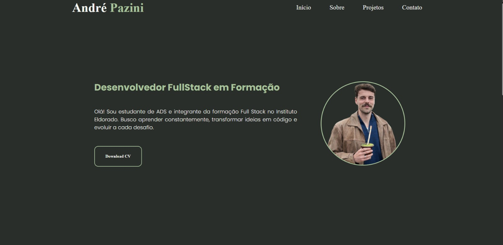
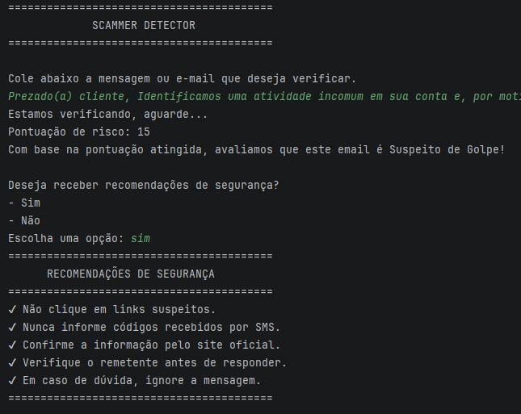

Desenvolvedor FullStack em Formação
Olá! Sou estudante de ADS e integrante da formação Full Stack no Instituto Eldorado. Busco aprender constantemente, transformar ideias em código e evoluir a cada desafio.
Download CVMuito Prazer, Sou André Pazini.
Estudante de Análise e Desenvolvimento de Sistemas, em busca da primeira oportunidade profissional na área de Tecnologia da Informação. Atualmente participo de um programa de formação em desenvolvimento Full Stack pelo Instituto de Pesquisas Eldorado, onde venho desenvolvendo conhecimentos práticos em Java, desenvolvimento Backend, bancos de dados PostgreSQL/SQL, Git e GitHub, por meio de estudos e desafios de programação.
Busco uma oportunidade de estágio para aplicar meus conhecimentos, continuar aprendendo e desenvolver minhas habilidades em um ambiente profissional. Minha experiência profissional anterior contribuiu para o desenvolvimento de disciplina, responsabilidade, resolução de problemas, trabalho em equipe e capacidade de adaptação.
Meus Projetos

Portfolio
Portfólio pessoal desenvolvido para apresentar meus projetos, habilidades e trajetória na área de desenvolvimento. A aplicação foi construída utilizando HTML e CSS, com foco em responsividade e uma experiência de navegação agradável.
Repositório
ScammerDetector
Aplicação backend desenvolvida para identificar possíveis e-mails suspeitos. O projeto analisa informações do e-mail e aplica regras de validação para auxiliar na detecção de possíveis tentativas de fraude.
RepositórioLoja Online {Em Desenvolvimento}
Loja virtual desenvolvida para divulgar e comercializar bolsas de crochê. A aplicação permitirá visualizar os produtos, consultar detalhes e facilitar o contato para realização de pedidos.
Repositório